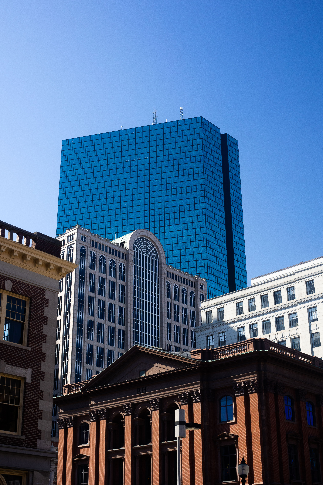

{% include base_path %}
In my free time I like to take photos, both digital and film.
Porter Square at sunset.

Boston skyline.
Slick bike.
Mt. Auburn Cemetery.
I also maintain a 360-card Magic: The Gathering cube --- basically a bunch of trading cards that can be drafted, assembled into decks, and played on short notice. Check out my list!